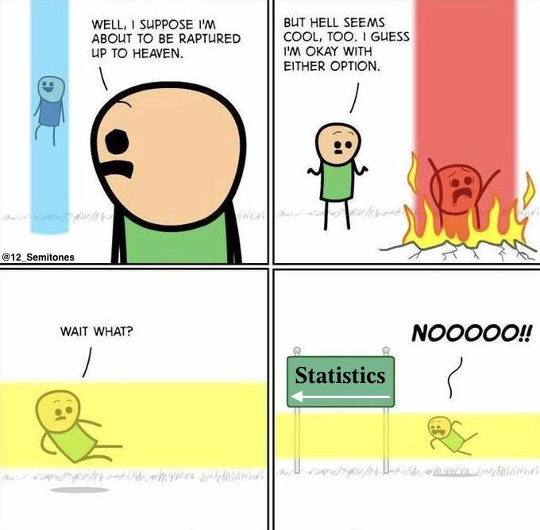

Pravděpodobnost a Statistika 1: cvičení
Vítejte na stránkách cvičení z Pravděpodobnosti a Statistiky 1 (přednáší Robert Šámal).
Jsme rozvržení na pondělí 10:40 v S6.
Pokud máte pocit, že
- něčemu nerozumíte,
- nestíháte deadline (z jakéhokoliv důvodu),
- nemáte dost bodů na zápočet,
- nevíte něco, co byste měli vědět,
- jsem Vám neřekl něco, co bych Vám měl říct,
- bych měl něco vylepšit či změnit nebo
- Vám něco jiného brání v získání jedničky z tohohle předmětu,
napište mi (tung@kam.mff.cuni.cz) dříve, než bude pozdě.
Sedneme si na to společně (v kyberprostoru je-li třeba) a nějak to vyřešíme.
Jak získat zápočet?
Zápočet dostanete za
- 66 % bodů z domácích úkolů, což se rozhodlo že je alespoň 200,
- 50 % bodů z písemky,
- úspěšné odevzdání statistické úlohy.
Domácí úkoly budete dostávat (téměř) každý týden.
Odevzdávejte je v Poštovní sově.
Enrollment token je 68d21c5d232c.
Vzájemné diskuze nad domácími úkoly podporuji.
Nicméně sepište odevzdané řešení sami.
Termín písemky teprve bude.
Řeknu Vám o něm nejpozději 14 dní před datem konání.
Písemka nebude.
Pokyny ke statistické úloze teprve budou.
Pokyny na naší paralelce jsou podobné těm na paralelce Martina Mareše.
Změny:
- Můžete použít Julii bez žádosti o svolení.
- Hodnocení je binární uznáno/neuznáno.
Dodatečné informace:
- Práce by měla být napsána čitelně, přestože si nejdeme pro Pullitzera.
- Můžete psát i v angličtině.
- Neexistuje seznam podmínek, jejichž splnění zaručí zápočet. Krása je v očích pozorovatele.
- Deadline je minimálně týden předtím, než budete chtít zápočet v SISu.
- Nové pravidlo pravé ruky: Pokud jste na zápočet potřebovali více než cca 20 bodů z desáté sady a později, lineární regrese Vám stačit nebude.
Obsah cvičení
Dvanácté cvičení -
Intervalové a bodové odhady.
Jedenácté cvičení -
Opakování minule kromě samplování.
Desáté cvičení -
Samplování, spojité náhodné vektory a podmíněná pravděpodobnost, limitní věty.
Deváté cvičení -
Exponenciální a normální rozdělení.
Vyřešili jsme 1, 2, 3, 6.
Osmé cvičení -
Spojité náhodné veličiny (<3): distribuční funkce a modelování.
Vyřešili jsme 1, 2, 3a, 3b, 4.
Také jsem ukázal obecný recept, jak řešit úlohy na transformaci spojitých náhodných veličin.
Nápovědy k úlohám.
Sedmé cvičení -
Poslední cvičení na diskrétní náhodné veličiny.
Příště už budou spojité.
Předvedené řešení 1 a 6.
Sesté cvičení -
Náhodné vektory.
Předvedli jsme si úlohy 1, 2, 4.
Páté cvičení -
Binomální rozdělení. Pár (praktických?) aplikací střední hodnoty.
Čtvrté cvičení -
Základy náhodných veličin.
Pluto.jl notebook.
Minimum z geometrických rozdělení.
Třetí cvičení -
Bayesova věta, nezávislost.
Druhé cvičení -
Podmíněná pravděpodobnost, řetízkové pravidlo, věta o úplné pravděpodobnosti.
První cvičení -
Opakování toho, co jste viděli v předchozím studiu.
Memes
